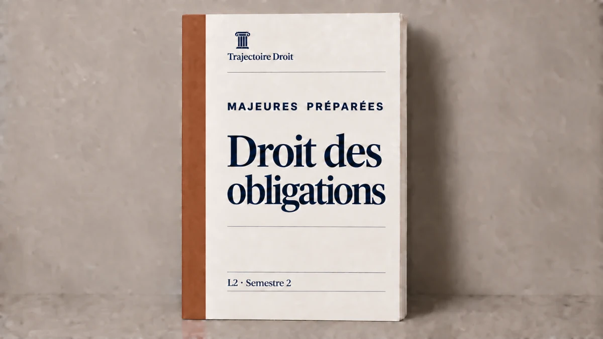
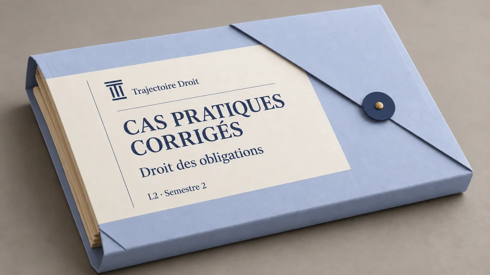
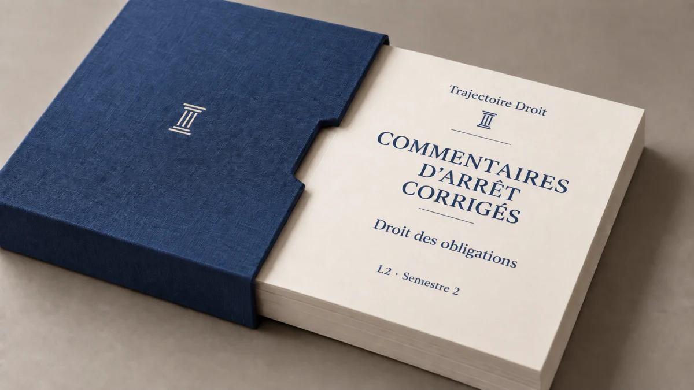

L'arrêt Bertrand expliqué simplement
L'arrêt Bertrand est rendu le 19 février 1997 par la deuxième chambre civile de la Cour de cassation. D'après l'article 1242 alinéa 4 C. civ., les parents répondent des dommages causés par leur enfant mineur. Jusqu'en 1997, ils pouvaient toutefois y échapper en prouvant qu'ils l'avaient bien surveillé. Depuis l'arrêt Bertrand, leur responsabilité est de plein droit, et la victime n'a donc aucune faute des parents à prouver. Les parents peuvent seulement se libérer en prouvant une force majeure ou une faute de la victime. Une bonne éducation ne les protège plus.


Droit des obligations L2 S2
Réviser toute la matière de cet arrêt avant les partiels
Les majeures préparées réunissent les règles du semestre, déjà rédigées condition par condition comme au début d'un cas pratique. La fiche complète reprend tout le cours du semestre, avec les grands arrêts expliqués et ce qu'ils changent pour la règle. Ce sont les deux supports que les étudiants achètent le plus sur le site.
Tu reçois le PDF par email juste après le paiement.
Que dit l'arrêt Bertrand ?
Avant cet arrêt, un parent poursuivi pouvait échapper à toute condamnation en prouvant qu'il n'avait commis aucune faute d'éducation ni de surveillance envers son enfant. La Cour de cassation supprime cette possibilité le 19 février 1997.
Depuis, le juge vérifie seulement si un cas de force majeure ou une faute de la victime explique le dommage. La force majeure désigne un événement extérieur que les parents ne pouvaient ni prévoir ni empêcher. Un parent qui a toujours bien surveillé son enfant est donc condamné quand même, et chaque procès de responsabilité parentale suit ce raisonnement.
Bertrand fait partie d'une série de trois décisions qui rendent la responsabilité des parents de plus en plus automatique. D'abord, l'assemblée plénière de la Cour de cassation n'exige plus de faute de l'enfant lui-même dans l'arrêt Fullenwarth du 9 mai 1984. Bertrand retire ensuite aux parents, en 1997, leur dernier moyen de s'exonérer. Enfin, la deuxième chambre civile confirme cette évolution dans l'arrêt Levert du 10 mai 2001, quatre ans plus tard.
Une bicyclette conduite par Sébastien, 12 ans, entre en collision avec la motocyclette de M. Domingues, qui est blessé.
La cour d'appel de Bordeaux retient la responsabilité de plein droit du père et refuse de rechercher s'il a bien surveillé son fils.
La Cour de cassation rejette le pourvoi et consacre une responsabilité de plein droit des parents.
L'arrêt Levert et l'assemblée plénière confirment la solution, puis la loi du 23 juin 2025 l'inscrit dans le Code civil.
Les faits, un accident de bicyclette
Le 24 mai 1989, une collision se produit entre une bicyclette et une motocyclette. Sébastien, un garçon de 12 ans, roule à bicyclette, alors que M. Domingues conduit la motocyclette. Le choc blesse M. Domingues. En revanche, l'arrêt publié ne précise ni le lieu de la collision ni la manière dont elle s'est produite, donc sa lecture ne permet pas de savoir lequel des deux a mal manœuvré.
Sébastien est mineur, et il habite avec son père, M. Jean-Claude X... La version publiée de l'arrêt efface en effet le nom de famille, mais l'affaire reste connue sous le nom de Bertrand. Ce lien entre le père et l'enfant compte beaucoup en droit. En effet, l'ancien article 1384 alinéa 4 C. civ., devenu l'article 1242 alinéa 4, rend le père et la mère responsables du dommage causé par leur enfant mineur qui habite avec eux. Le civilement responsable est la personne qui paie sur son propre patrimoine les dommages causés par quelqu'un d'autre. Le père est donc le civilement responsable de son fils.
M. Domingues demande ainsi réparation de son préjudice au père, en sa qualité de civilement responsable, et à l'assureur du père, l'UAP. Il agit contre le père plutôt que contre l'enfant, parce qu'un garçon de 12 ans n'a en général aucun bien qui permettrait d'indemniser un blessé. Le Fonds de garantie automobile se joint aussi au procès déjà engagé, ce qu'on appelle une intervention à l'instance. Cet organisme indemnise certaines victimes d'accidents de la circulation quand le responsable n'est pas assuré ou reste inconnu. L'arrêt ne dit pas quelle position il a défendue.
La procédure, de Bordeaux à la deuxième chambre civile
Le jugement de première instance n'est pas publié, et l'arrêt de la Cour de cassation n'en dit rien. La décision attaquée est en revanche connue. Le 4 octobre 1994, la cour d'appel de Bordeaux retient la responsabilité du père. D'après elle, le père encourt une responsabilité de plein droit, qui s'applique dès que les conditions du texte sont réunies.
La cour d'appel en déduit que seules la force majeure ou la faute de la victime pourraient exonérer le père. Elle refuse donc de rechercher s'il a bien surveillé son fils, puisque la réponse à cette question ne changerait rien à la condamnation.
Un pourvoi en cassation est alors formé contre l'arrêt de Bordeaux. Ce recours demande à la Cour de cassation de vérifier si la cour d'appel a bien appliqué la loi. Un moyen est une critique distincte de l'arrêt attaqué. Ce pourvoi présente trois moyens. La version publiée remplace le premier et le troisième par la mention « sans intérêt », si bien que leur contenu reste inconnu. Seul le deuxième moyen est reproduit et discuté.
Le 19 février 1997, la deuxième chambre civile de la Cour de cassation rejette le pourvoi. La condamnation du père prononcée à Bordeaux devient donc définitive.
Les arguments des parties, la bonne surveillance ou la force majeure
Le deuxième moyen reproche à la cour d'appel d'avoir violé l'article 1384 alinéa 4 C. civ. Son raisonnement part d'une lecture du texte que la jurisprudence admettait avant 1997. Une présomption est une règle qui suppose les parents responsables dès que leur enfant cause un dommage, sans que la victime ait à prouver leur faute. Selon le moyen, la responsabilité des parents repose sur une présomption. Les parents peuvent toutefois écarter cette présomption dans trois cas.
- La force majeure. Les parents prouvent un événement extérieur qu'ils ne pouvaient ni prévoir ni empêcher.
- La faute de la victime. Les parents prouvent que la victime a elle-même causé son dommage par sa faute.
- L'absence de faute des parents. Les parents prouvent qu'ils n'ont commis aucune faute dans la surveillance ou dans l'éducation de l'enfant.
Le moyen applique ensuite cette lecture à l'affaire. Devant la cour d'appel, le père voulait justifier qu'il n'avait commis aucun défaut de surveillance. La cour d'appel a pourtant refusé d'examiner cette question, au motif que seules la force majeure ou la faute de la victime pouvaient l'exonérer. Pour le moyen, ce refus retire au père la troisième défense que la loi lui accorde. La cour d'appel devait donc d'abord rechercher s'il avait bien surveillé son fils, et elle pouvait seulement le condamner après cette vérification.
L'arrêt de Bordeaux, qui donne raison à M. Domingues, retient au contraire une autre lecture du texte. Pour la cour d'appel, le père répond du dommage de plein droit, du seul fait que son fils mineur habite avec lui et a causé l'accident. La qualité de la surveillance sort donc du débat, et le père peut seulement se libérer en prouvant une force majeure ou une faute de M. Domingues. Or aucune des deux n'a été retenue. Enfin, l'arrêt de la Cour de cassation ne rapporte pas les observations de M. Domingues ni celles du Fonds de garantie.
Le problème de droit
La Cour de cassation doit dire si des parents peuvent s'exonérer en prouvant qu'ils n'ont commis aucune faute d'éducation ni de surveillance. Le texte de l'article 1384 alinéa 4 C. civ., applicable à l'époque, ne répondait pas à cette question.
La présomption s'applique aux parents dès que leur enfant mineur cause un dommage. Le texte ne précise pourtant pas comment les parents peuvent la renverser.
Deux lectures étaient donc possibles. Si la preuve d'une bonne éducation suffisait, la responsabilité des parents restait une présomption de faute, que les parents renversaient en montrant qu'ils avaient correctement surveillé leur enfant. Si seules la force majeure et la faute de la victime comptaient, elle devenait au contraire une responsabilité de plein droit, sur laquelle la qualité de l'éducation n'avait plus aucun effet.
La solution, une responsabilité de plein droit
La Cour de cassation rejette le pourvoi, car elle approuve le raisonnement de la cour d'appel de Bordeaux, dont elle reprend les termes. Il faut connaître cet attendu pour une copie.
L'attendu de l'arrêt Bertrand
« […] seule la force majeure ou la faute de la victime pouvait exonérer M. X... de la responsabilité de plein droit encourue du fait des dommages causés par son fils mineur habitant avec lui, [de sorte que] la cour d'appel n'avait pas à rechercher l'existence d'un défaut de surveillance du père. »Cass. civ. 2e, 19 février 1997, Bertrand, n° 94-21.111
La Cour de cassation qualifie ici explicitement la responsabilité des parents de « responsabilité de plein droit ». Elle répond ainsi à la question que le texte laissait sans réponse.
En l'absence de force majeure ou de faute de la victime, les parents répondent donc automatiquement du dommage causé par leur enfant, même s'ils l'ont bien surveillé et bien éduqué.

Majeures préparées
Droit des obligations L2 S2
Pourquoi la Cour écarte la preuve de la bonne éducation
Un débiteur solvable est une personne capable de payer. La Cour veut garantir à la victime un débiteur solvable, quelle que soit la qualité réelle de l'éducation donnée par les parents. En effet, avant 1997, une partie de la jurisprudence acceptait qu'un parent prouve son absence de faute pour échapper à toute condamnation.
Cette preuve restait pourtant difficile à apprécier pour un juge, car la qualité d'une éducation ou d'une surveillance ne se mesure jamais avec certitude. Le débat tournait donc souvent en faveur des parents, au détriment de la victime, qui se retrouvait sans réparation face à un enfant mineur insolvable.
Cette solution suit un mouvement plus large, qu'on appelle l'objectivation de la responsabilité civile. Une personne devient alors responsable sans que la victime ait à prouver sa faute. L'arrêt Jand'heur engage ce mouvement dès 1930 pour le fait des choses, puis l'arrêt Blieck l'étend en 1991 au fait d'autrui en général.
Bertrand applique cette même logique à la responsabilité des parents. Ainsi, le juge regarde désormais le lien qui unit le responsable à l'auteur du dommage, ici le lien de filiation et de cohabitation. La faute personnelle de celui qui répond du dommage ne compte donc plus.
La portée, une ligne jurisprudentielle jusqu'en 2025
Bertrand fait partie d'une série de décisions qui ont construit la responsabilité de plein droit des parents.
La première est l'arrêt Fullenwarth, rendu par l'assemblée plénière de la Cour de cassation le 9 mai 1984, treize ans avant Bertrand. Il porte sur l'enfant et juge qu'un simple fait de l'enfant, même sans discernement et sans faute prouvée, suffit à engager la responsabilité des parents.
En 1997, Bertrand complète ensuite cette évolution du côté des parents, en leur retirant la possibilité de prouver leur propre absence de faute.
Le même jour, la Cour de cassation rend un second arrêt, l'arrêt Samda, qui porte sur la cohabitation de l'enfant avec ses parents, alors que Bertrand porte sur les causes d'exonération.
Samda précise que la cohabitation correspond à la résidence habituelle de l'enfant fixée en droit, même si l'enfant n'est pas physiquement présent chez ses parents. Bertrand dit donc comment les parents peuvent se défendre, alors que Samda dit où l'enfant est censé habiter.
Dans l'arrêt Levert du 10 mai 2001, la deuxième chambre civile juge ensuite que la responsabilité des parents ne dépend pas d'une faute de l'enfant. Le 13 décembre 2002, l'assemblée plénière fixe définitivement la solution, car elle retient qu'un simple fait de l'enfant à l'origine du dommage, même non fautif, suffit à engager la responsabilité de ses parents.
Le 8 février 2005, la chambre criminelle ajoute une précision. Dans cette affaire, un garçon de 13 ans vivait depuis douze ans chez sa grand-mère, avec l'accord de ses parents. La Cour juge pourtant que les parents restent responsables, car aucun juge ni aucune administration n'avait décidé de confier l'enfant à sa grand-mère.
Puis, le 28 juin 2024, l'assemblée plénière change sa jurisprudence sur la notion de cohabitation elle-même.
Elle rattache désormais la cohabitation à l'exercice conjoint de l'autorité parentale, alors qu'elle la rattachait jusque-là à la résidence de l'enfant. Les deux parents séparés redeviennent donc solidairement responsables, sauf si une décision a confié l'enfant à un tiers. Cet arrêt cite d'ailleurs explicitement Bertrand comme la décision qui a détaché la responsabilité des parents de toute faute de leur part.
La loi du 23 juin 2025 inscrit enfin cette construction jurisprudentielle dans le Code civil. Elle réécrit l'article 1242 alinéa 4 et consacre expressément une responsabilité de plein droit et solidaire des parents. Solidaire veut dire que la victime peut réclamer toute la réparation à l'un ou à l'autre des parents.
Elle supprime aussi la condition de cohabitation, sauf lorsque l'enfant a été confié à un tiers par une décision administrative ou judiciaire. Près de trente ans après Bertrand, le législateur reprend donc la solution posée par la Cour de cassation en 1997.
La critique, entre sécurité de la victime et sévérité pour les parents
Les auteurs sont partagés sur la solution de 1997. Patrice Jourdain, dans sa note sous l'arrêt, salue le changement de jurisprudence mais relève une ambiguïté. Selon lui, la Cour de cassation consacre une responsabilité objective, détachée de toute faute, mais elle ne dit pas sur quel fondement elle repose. Ce fondement pourrait ainsi être le risque créé par l'enfant, ou la garantie due à la victime.
Geneviève Viney approuve, de son côté, plus nettement le passage à une responsabilité détachée de la faute, parce que la victime est ainsi plus sûre d'être indemnisée.
Trois arguments plaident en faveur du régime. D'abord, il apporte la sécurité juridique, car la victime n'a plus à subir un débat sur la qualité de l'éducation, que le juge ne peut jamais trancher avec certitude. Ensuite, il règle la question de la solvabilité, puisque l'enfant mineur reste le plus souvent insolvable alors que ses parents et leur assurance responsabilité civile peuvent indemniser le dommage.
Enfin, il rend le système cohérent, car cette solution poursuit le mouvement d'objectivation entamé par Jand'heur puis Blieck, et traite la responsabilité du fait d'autrui selon la même logique que la responsabilité du fait des choses.
Les critiques portent en retour sur la situation des parents eux-mêmes. Le régime traite l'enfant comme un risque que l'assurance couvre, presque comme une chose. Une partie des auteurs le critique pour cette raison, car l'autorité parentale sert d'abord à éduquer l'enfant.
De plus, il condamne des parents à qui on ne peut rien reprocher, puisque même une éducation exemplaire ne les exonère plus.
Après une séparation, cette sévérité pesait longtemps sur le seul parent chez qui l'enfant résidait, jusqu'à ce que l'arrêt du 28 juin 2024 rende les deux parents responsables ensemble.
Comment utiliser l'arrêt Bertrand dans une copie
Dans un cas pratique
L'arrêt sert dès qu'un énoncé présente un dommage causé par un enfant mineur et que la victime cherche à se faire indemniser par ses parents. La réponse suit alors le raisonnement de tout cas pratique corrigé. On pose d'abord la problématique, puis la majeure expose la règle, et la mineure l'applique aux faits condition par condition. Voici ce raisonnement rédigé sur un énoncé type.
Les faits. En septembre 2026, Noah, 13 ans, joue au ballon dans la rue et casse la baie vitrée d'une voisine, Mme Garnier. Ses parents sont divorcés et exercent ensemble l'autorité parentale, mais Noah vit chez sa mère. Mme Garnier demande au père de payer le remplacement de la vitre, soit 1 800 euros. Le père refuse, car Noah n'habite pas chez lui et il lui avait toujours interdit de jouer au ballon près des maisons.
Problématique. Un parent séparé qui exerce l'autorité parentale doit-il réparer le dommage causé par son enfant mineur, alors que l'enfant ne vit pas chez lui et qu'il prouve l'avoir correctement éduqué ?
Majeure. La responsabilité des parents du fait de leurs enfants relève de l'article 1242 alinéa 4 du Code civil. En effet, sa version issue de la loi du 23 juin 2025 s'applique aux faits commis depuis le 25 juin 2025. Cette responsabilité suppose donc cinq conditions.
- Un enfant mineur. L'enfant doit avoir moins de dix-huit ans au jour du fait qui cause le dommage. Un enfant émancipé sort de ce régime, et lui seul répond alors de ses actes.
- Une filiation légalement établie. Seuls les parents à l'égard desquels un lien de filiation est établi répondent de l'enfant. Un beau-parent qui vit avec l'enfant au quotidien n'est donc jamais responsable sur ce fondement.
- L'exercice de l'autorité parentale. Les parents répondent du dommage en tant qu'ils exercent l'autorité parentale, sauf si l'enfant a été confié à un tiers par une décision administrative ou judiciaire. D'ailleurs, dans son arrêt du 28 juin 2024, l'assemblée plénière de la Cour de cassation avait déjà jugé que des parents séparés qui exercent ensemble l'autorité parentale sont tous les deux responsables, même si l'enfant vit chez un seul d'entre eux. La loi de 2025 a donc généralisé cette solution en supprimant du texte la condition de cohabitation.
- Un fait causal du mineur. Un simple fait de l'enfant à l'origine du dommage suffit, même s'il n'a commis aucune faute. L'assemblée plénière l'a jugé dans l'arrêt Fullenwarth du 9 mai 1984, et la deuxième chambre civile l'a confirmé dans l'arrêt Levert du 10 mai 2001.
- Un préjudice réparable. La victime doit enfin subir un dommage que le droit permet de réparer.
Depuis l'arrêt Bertrand de la deuxième chambre civile du 19 février 1997, cette responsabilité est de plein droit, et la loi de 2025 le dit désormais elle-même. Les parents peuvent donc seulement s'exonérer en prouvant une force majeure ou une faute de la victime. La preuve qu'ils ont correctement surveillé et éduqué leur enfant reste sans effet sur leur condamnation.
Mineure. En l'espèce, Noah a 13 ans au moment où il casse la vitre, donc la condition tenant à la minorité est remplie. Ensuite, Noah est l'enfant des deux parents, et rien dans l'énoncé ne remet en cause ce lien de filiation, si bien que cette deuxième condition est également remplie.
De plus, concernant l'autorité parentale, le père l'exerce avec la mère depuis leur divorce. Noah vit chez sa mère, mais les faits datent de septembre 2026, donc la loi de 2025 s'applique et n'exige plus que l'enfant habite avec le parent poursuivi. Aucune décision n'a par ailleurs confié Noah à un tiers. Ainsi, la condition tenant à l'exercice de l'autorité parentale est remplie à l'égard du père.
En outre, le ballon lancé par Noah a directement brisé la vitre. Ce fait de l'enfant est donc à l'origine du dommage, même si Noah n'a pas voulu casser la vitre. Par ailleurs, Mme Garnier doit remplacer sa baie vitrée pour 1 800 euros, ce qui constitue un préjudice matériel réparable.
Le père invoque pourtant la bonne éducation qu'il a donnée à son fils. Or, depuis l'arrêt Bertrand, cette preuve ne permet plus aux parents d'échapper à leur responsabilité. De plus, un enfant qui joue au ballon dans la rue crée un risque que ses parents pouvaient prévoir, ce qui exclut la force majeure. Mme Garnier, enfin, se trouvait chez elle et n'a commis aucune faute.
Conclusion. Les cinq conditions sont réunies et aucune cause d'exonération n'est établie. Le père doit donc réparer le dommage de Mme Garnier, solidairement avec la mère, et la voisine peut lui réclamer la totalité des 1 800 euros.
Pour un fait commis avant le 25 juin 2025, l'ancien texte s'applique et exige que l'enfant habite avec ses parents. L'arrêt du 28 juin 2024 déduit alors cette cohabitation de l'exercice conjoint de l'autorité parentale, si bien que la solution reste la même pour le père.

Cas pratiques corrigés
Droit des obligations L2 S2
Dans un commentaire d'arrêt
Si Bertrand tombe en commentaire, l'introduction suit les six étapes de la méthode, de l'accroche jusqu'à l'annonce du plan. La procédure s'y raconte en même temps que les arguments de chaque partie, et le pourvoi arrive avec sa lecture du texte. La question de droit retenue dans mon commentaire corrigé de cet arrêt est la suivante.
Les parents peuvent-ils s'exonérer de leur responsabilité pour le dommage causé par leur enfant mineur qui habite avec eux, en prouvant qu'ils n'ont commis aucune faute de surveillance ou d'éducation ?
Le plan suit ensuite les deux temps de la décision. La première partie explique comment la Cour abandonne la faute présumée des parents, puis la seconde montre pourquoi ce régime protège la victime et comment il s'est prolongé jusqu'aux réformes récentes.
- I. Le rejet de l'absence de faute comme cause d'exonération des parents
A. La rupture avec une responsabilité parentale fondée sur la faute présumée
B. La réduction des causes d'exonération à la seule cause étrangère - II. L'inscription assumée du régime dans la logique de réparation des victimes
A. Le rattachement de la responsabilité parentale à la garantie du tiers victime
B. Le prolongement de l'objectivation jusqu'à la réforme de 2024 et 2025
Ma page sur le commentaire d'arrêt détaille chaque étape de l'introduction, et celle sur la fiche d'arrêt montre comment préparer la décision avant de la commenter.

Commentaire corrigé
Arrêt Bertrand, 19 février 1997
Dans une dissertation
Bertrand sert dès que le sujet porte sur la responsabilité du fait d'autrui, sur l'objectivation de la responsabilité civile ou sur la place de la faute dans la responsabilité, par exemple « La faute dans la responsabilité civile » ou « La responsabilité des parents ». Dans la sous-partie qui l'utilise, l'idée vient d'abord, puis l'arrêt la prouve. Voici le début d'une sous-partie rédigée de cette façon.
« La responsabilité des parents s'est détachée de toute faute de leur part pour garantir l'indemnisation de la victime. En effet, un enfant mineur n'a le plus souvent aucun bien qui permettrait de réparer le dommage qu'il cause, alors que ses parents et leur assurance peuvent payer. C'est pourquoi la deuxième chambre civile de la Cour de cassation a jugé, dans l'arrêt Bertrand du 19 février 1997, que seules la force majeure ou la faute de la victime peuvent exonérer les parents. La preuve d'une bonne surveillance ou d'une bonne éducation ne leur permet donc plus d'échapper à la condamnation. L'assemblée plénière a complété cette évolution le 13 décembre 2002, en jugeant qu'un simple fait de l'enfant, même non fautif, suffit à engager ses parents. »
La sous-partie peut se poursuivre avec la suite de cette évolution. L'arrêt du 28 juin 2024 a en effet rendu les deux parents séparés responsables ensemble, puis la loi du 23 juin 2025 a inscrit la responsabilité de plein droit dans l'article 1242 alinéa 4. Ma page sur la dissertation juridique explique comment construire chaque sous-partie.
Ma fiche de droit des obligations L2 replace enfin ce régime dans le reste du programme de la responsabilité civile, notamment la responsabilité du fait des choses issue de l'arrêt Jand'heur et la garde définie par l'arrêt Franck.
Les erreurs à éviter avec l'arrêt Bertrand
- La date exacte. L'arrêt Bertrand est rendu le 19 février 1997. Attention, ne le confonds pas avec un arrêt du 17 février 2011, qui porte sur l'appréciation de la force majeure.
- Bertrand ou Samda. Les deux arrêts sont rendus le même jour par la même chambre. Bertrand porte sur les causes d'exonération des parents, alors que Samda porte sur la notion de cohabitation.
- Présomption de faute ou responsabilité de plein droit. Depuis 1997, la responsabilité des parents est une responsabilité de plein droit, détachée de toute faute de leur part. Une éducation irréprochable ne les exonère donc plus.
- Le simple fait de l'enfant. Depuis Fullenwarth, Levert et l'assemblée plénière de 2002, un simple fait de l'enfant à l'origine du dommage suffit, même s'il n'est pas fautif.
Questions fréquentes
Que dit l'arrêt Bertrand en une phrase ?
Pourquoi l'arrêt Bertrand est-il si important ?
Quelle est la date et la juridiction de l'arrêt Bertrand ?
L'arrêt Bertrand est-il toujours d'actualité ?
Comment citer l'arrêt Bertrand en copie ?

Après l'arrêt Bertrand, révise tout le programme de droit des obligations.
Ma fiche de droit des obligations L2 reprend chaque notion avec les grands arrêts qui la fondent. Les explications restent simples, pour que tu les comprennes à la première lecture et que tu t'en serves en commentaire comme en cas pratique.
Voir la fiche de droit des obligations L2